Autonomous Vehicles & Robotics
Operations Center
A compartmentalized multi-page application for monitoring, commanding, and reasoning about autonomous-vehicle and robotics fleets. Every module is its own route — bookmarkable, refresh-safe, shareable. This is a real static MPA: 19 separate HTML pages, not a single landing page.
Operational modules (M1–M6, Phase 1)
The management layer — registry, telemetry, missions, robotics console, diagnostics, and the knowledge vault.
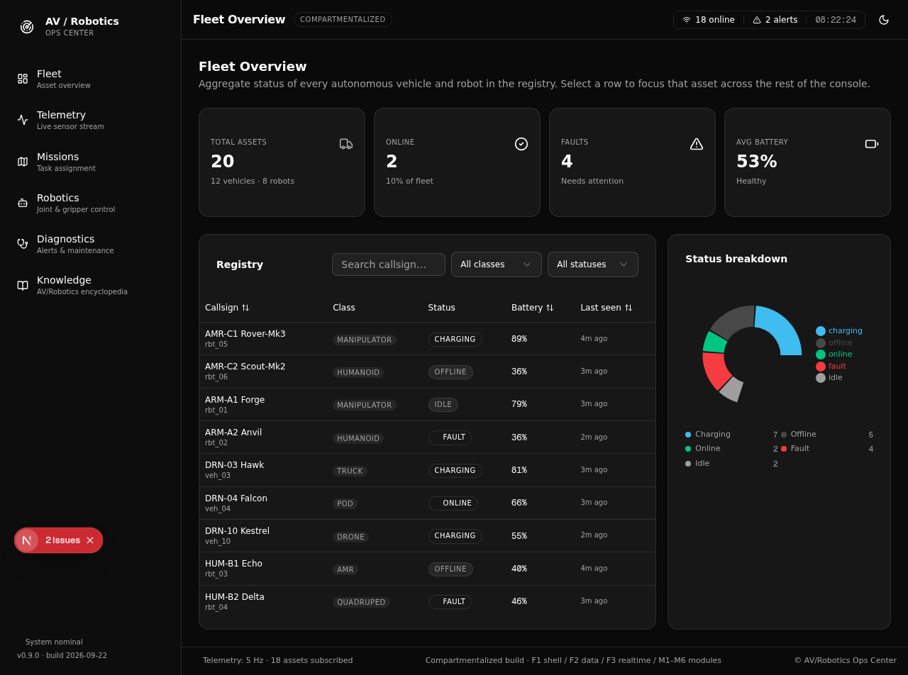
Fleet Overview
KPI cards, filterable registry, status donut.
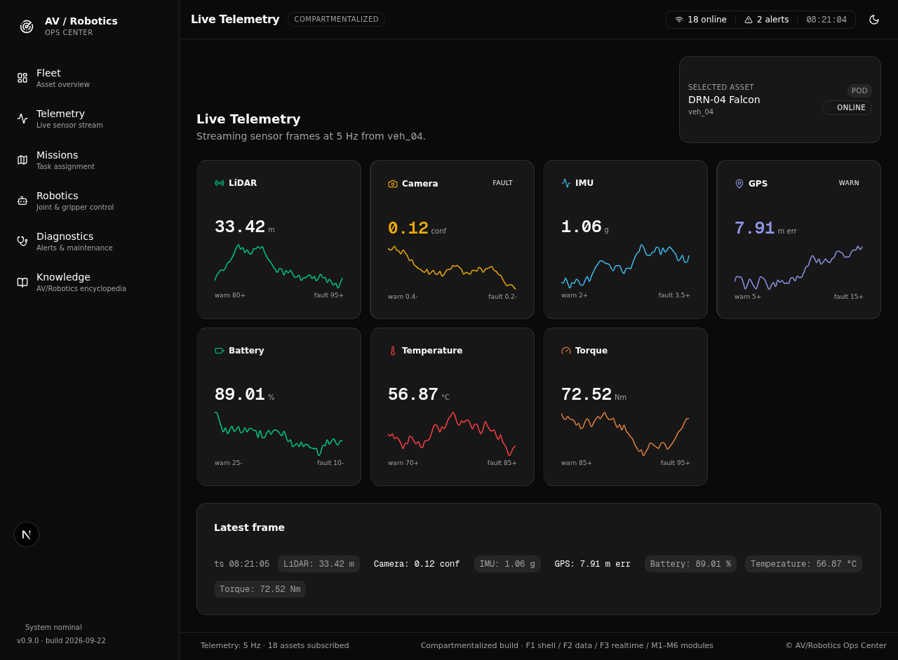
Live Telemetry
5 Hz sensor streams with threshold coloring.
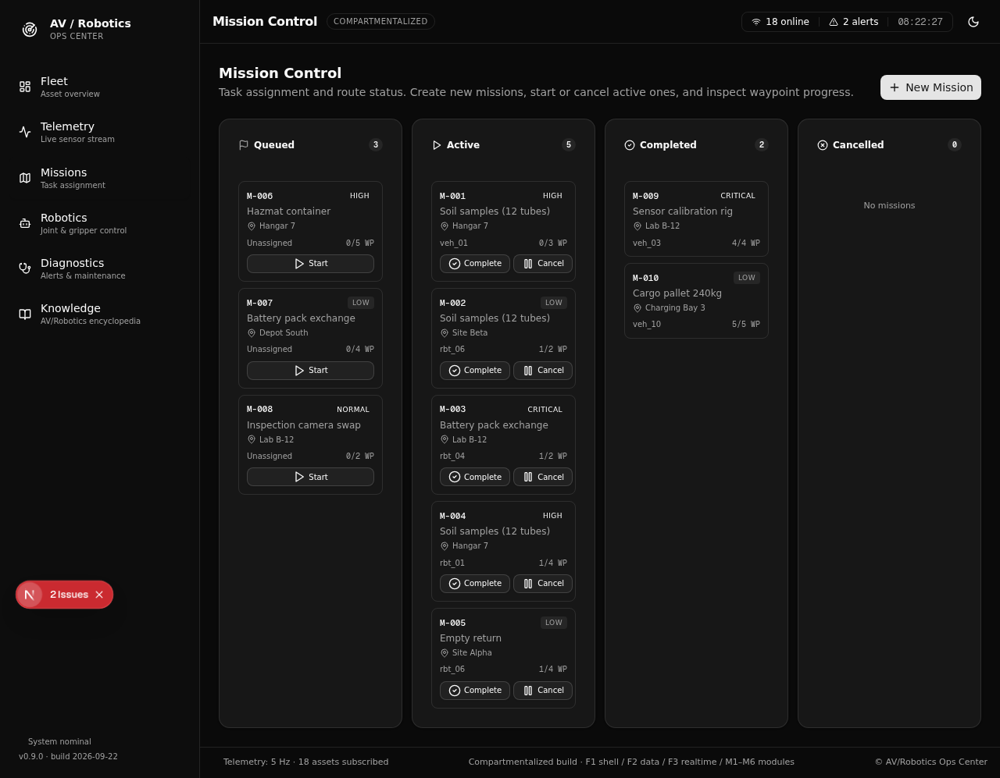
Mission Control
Kanban board with create/start/cancel.
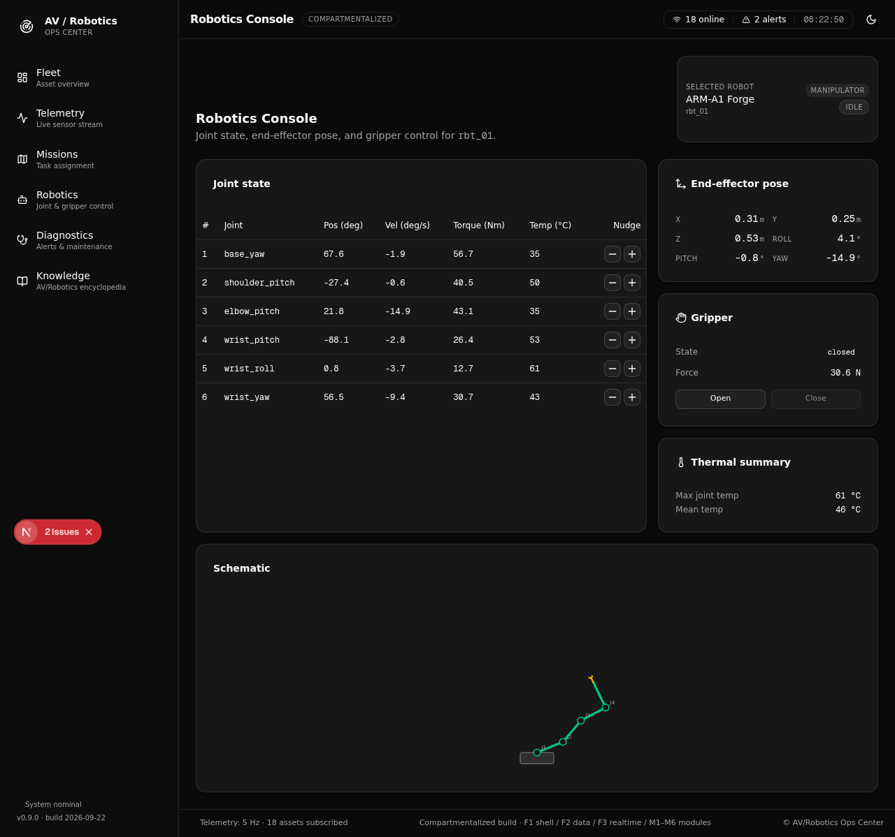
Robotics Console
Joint state, gripper, animated SVG schematic.
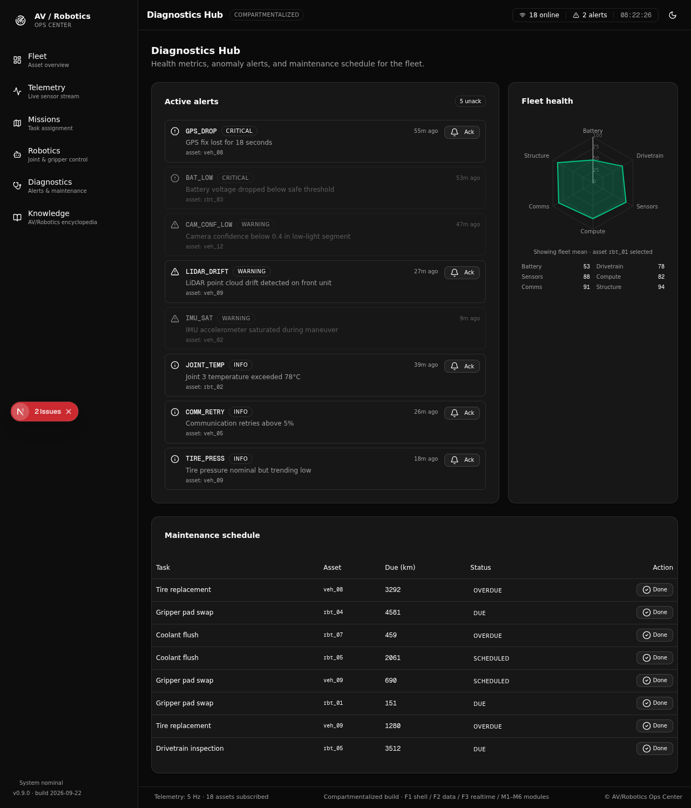
Diagnostics Hub
Alerts, fleet-health radar, maintenance.

Knowledge Vault
Searchable AV/Robotics encyclopedia.
Deep AV subsystems (M7–M14, Phase 3) Phase 3
Eight deep AV-subsystem panels on top of the operational layer — perception fusion, SLAM, prediction, behavioural planning, trajectory/MPC, V2X, fault tolerance, and simulation/HIL.
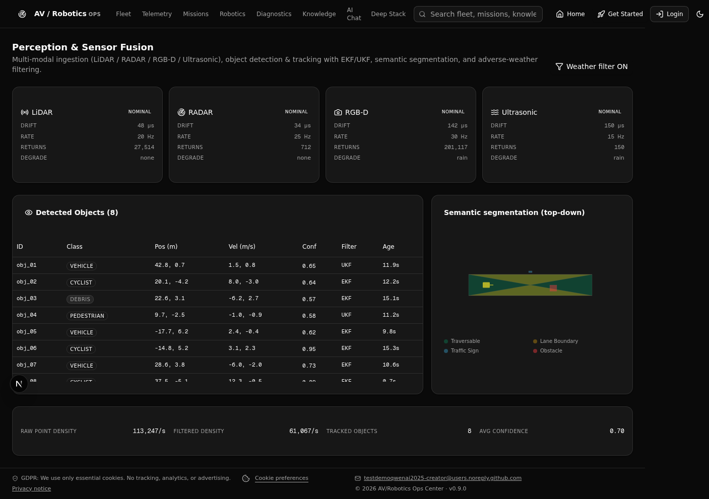
Perception
LiDAR/RADAR/RGB-D/Ultrasonic fusion.
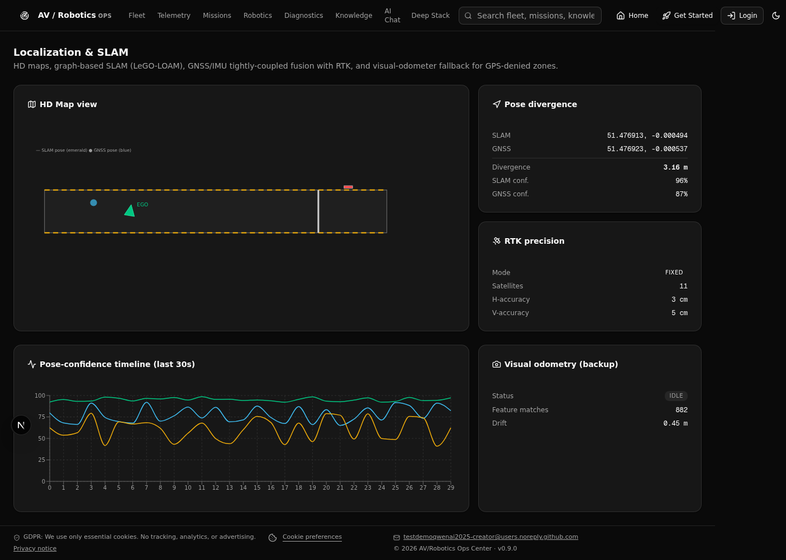
Localization
HD maps, SLAM, RTK-GNSS/IMU.
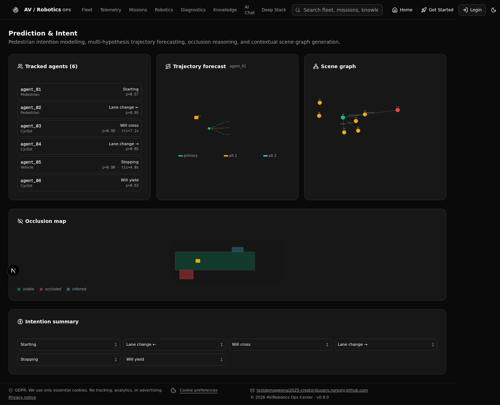
Prediction
Pedestrian intent, trajectory cones.

Planning
Behaviour FSM, arbitration tree.
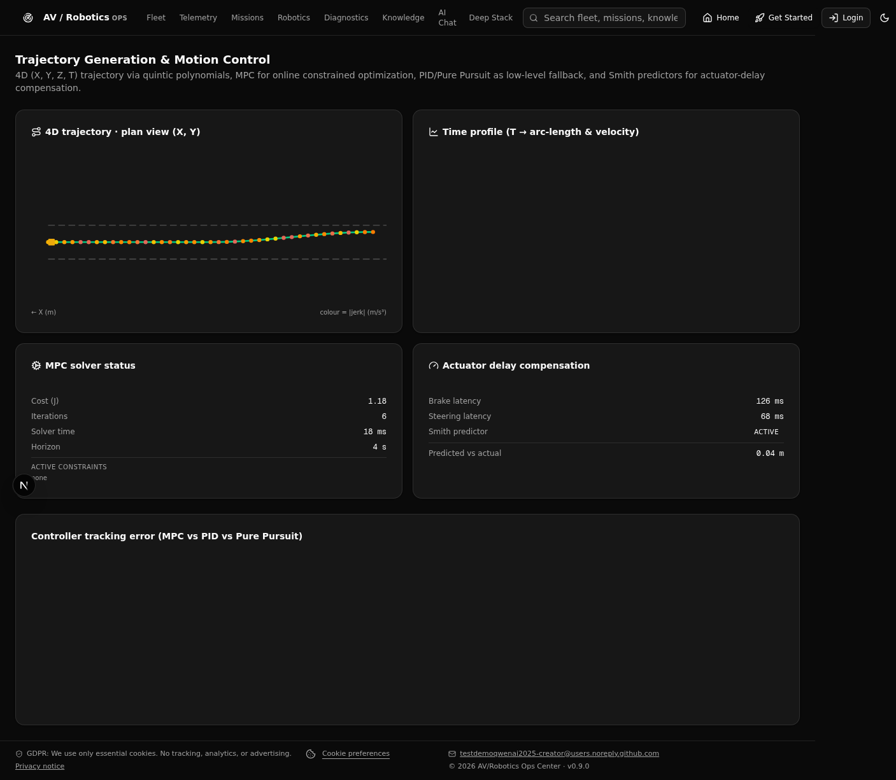
Trajectory
4D quintic, MPC, Smith predictor.

V2X
V2V mesh, V2I, HSM crypto.
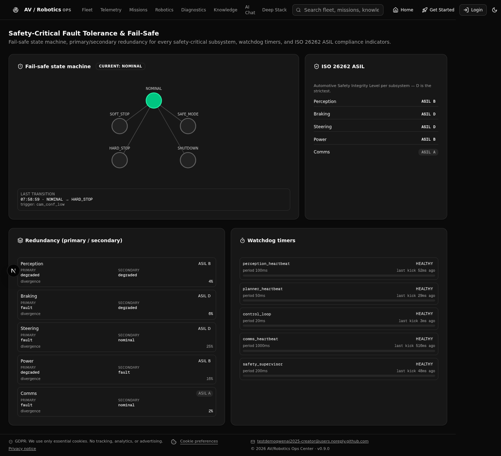
Safety
Fail-safe FSM, redundancy, ASIL.
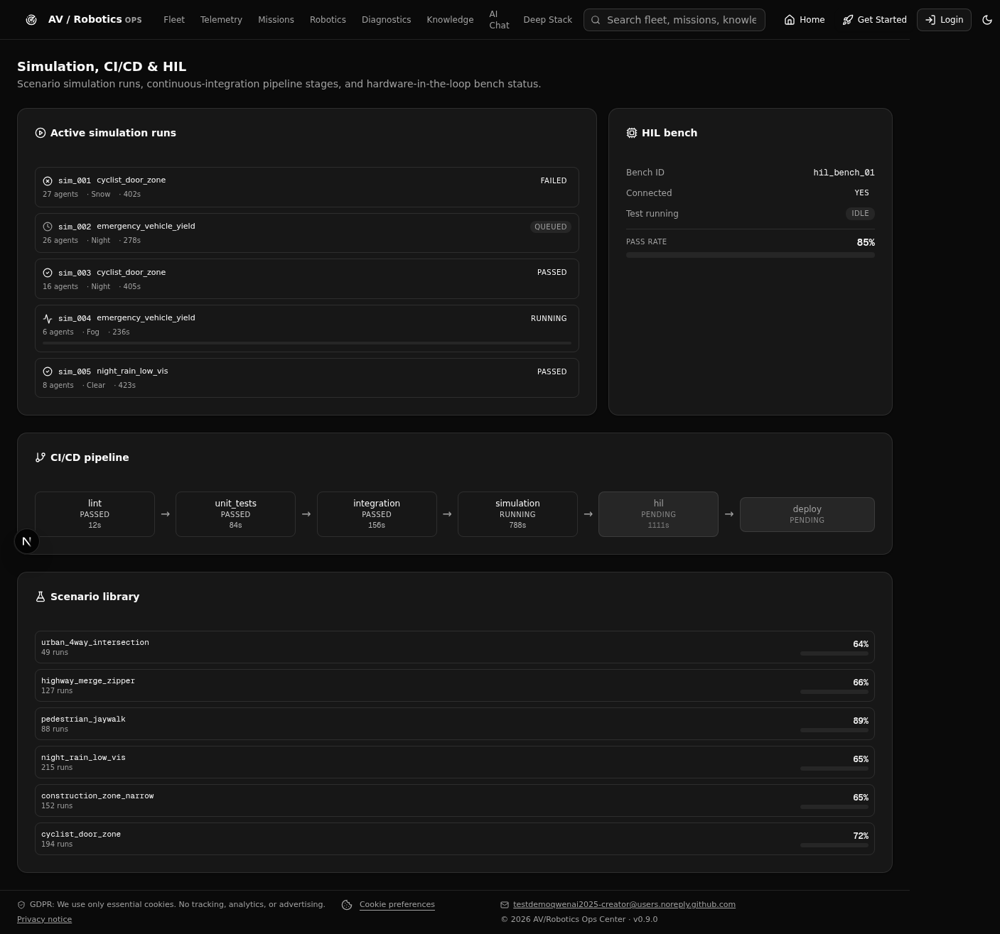
Simulation
CI/CD pipeline, HIL bench.
Cross-cutting pages (Phase 2 + Phase 6)
Login with auto-fill, cross-module search, theme-scoped AI chat, GDPR privacy notice, the Phase 6 production architecture page, and the dynamic live demo pop-page.
assets/. Browser back/forward works. Pages are bookmarkable. Theme toggle persists across pages via localStorage. Source code, type contracts, and architecture docs live in the private repo RoboTrnsVchi.